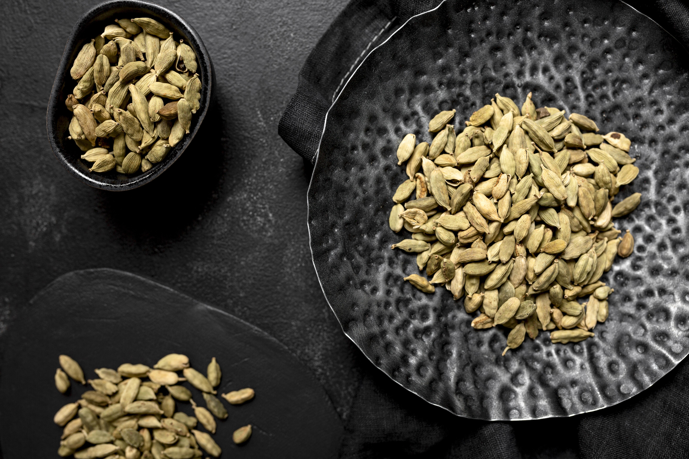
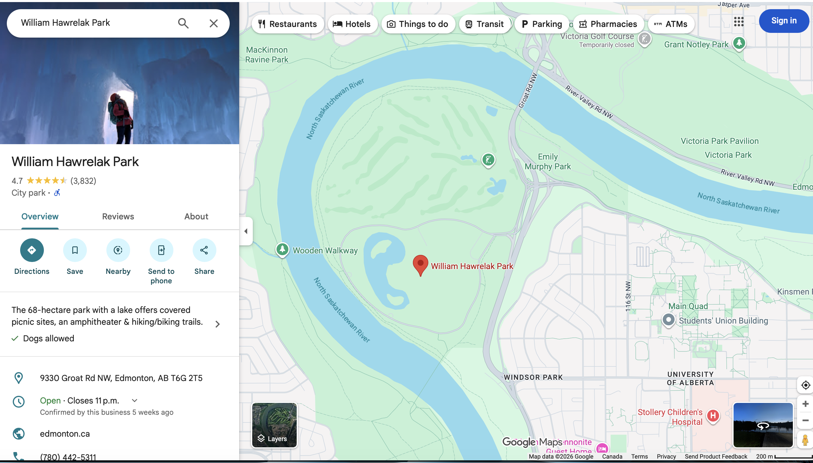

The Rising Global Demand for Green Cardamom: A Review of Recent Developments

Green cardamom has long been valued for its aromatic flavor and medicinal properties, but recent global trends have pushed this spice into an entirely new spotlight. A 2024 article published by The Economic Times highlights how green cardamom prices have surged due to increased international demand and shifting agricultural conditions. According to the report, global consumption of premium-grade green cardamom has grown significantly, driven by rising interest in natural wellness products.
This statement reflects a broader movement toward organic and health-focused ingredients, positioning cardamom as a key player in the global spice market.
One of the most notable insights from the article is the connection between climate variability and production levels. Farmers in major producing regions such as India and Guatemala have reported inconsistent yields, which has contributed to price fluctuations. The article explains that unpredictable rainfall and rising temperatures have made cultivation more challenging, pushing producers to adopt new farming techniques and invest in more resilient crops. These agricultural shifts are shaping the future of the spice industry and influencing how cardamom is grown, harvested, and exported.
The article also emphasizes the growing role of cardamom in the wellness and beverage industries. From herbal teas to essential oils, green cardamom is increasingly marketed as a natural remedy for digestion, inflammation, and stress relief. This trend has expanded its consumer base beyond traditional culinary uses, making it a sought-after ingredient in both Eastern and Western markets. As the article notes, cardamom's versatility has made it a favorite among health-conscious consumers and specialty food manufacturers.
Overall, the article provides a timely and insightful look into the evolving landscape of green cardamom production and consumption. Its analysis helps readers understand why this spice has become more valuable than ever and how global demand continues to shape its future.
Source: The Economic Times — Cardamom prices surge as demand rises and production fluctuates
🌟 What's New & Exciting



🏕️ My Favorite Picnic Spot in Edmonton

One of my favorite picnic spots in Edmonton is Hawrelak Park, a peaceful green space perfect for relaxing by the lake. The park offers wide open fields, shaded areas, and plenty of walking paths. To get there, simply follow Groat Road and take the exit toward the park entrance. It's easy to access and ideal for a quiet afternoon outdoors.